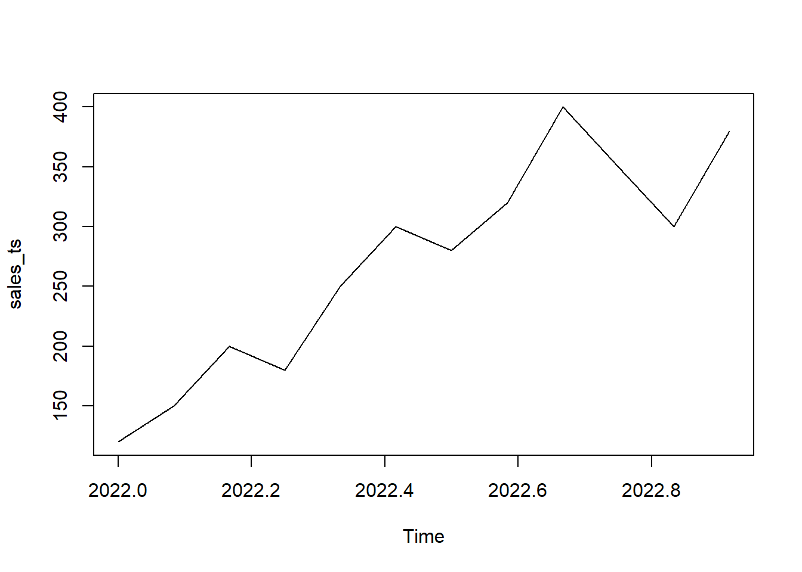

Time series analysis is a powerful tool in the hands of a data scientist or analyst. It allows us to uncover patterns, trends, and insights hidden within temporal data. In this blog post, we’ll explore how to create a time series in R using the base R function ts().
The ts() Function
The ts() function in R is a fundamental tool for handling time series data. It takes four main arguments:
data: A vector or matrix of time series values.
start: The time of the first observation.
end: The time of the last observation.
frequency: The number of observations per unit of time.
Let’s dive into a practical example. Suppose we have a vector sales representing monthly sales data for a year. We can create a time series object using the ts() function as follows:
# Sample datasales <-c(120, 150, 200, 180, 250, 300, 280, 320, 400, 350, 300, 380)# Creating a time seriessales_ts <-ts(data = sales, start =c(2022, 1), end =c(2022, 12), frequency =12 )# Display the time seriesprint(sales_ts)
Jan Feb Mar Apr May Jun Jul Aug Sep Oct Nov Dec
2022 120 150 200 180 250 300 280 320 400 350 300 380
plot(sales_ts)

This example creates a monthly time series for sales data throughout the year 2022.
Try it out!
Creating time series in R is a hands-on task. I encourage you to pick a dataset relevant to your interests or work and follow the same steps. You can use various time frequencies (e.g., daily, weekly, monthly) depending on your data.
Bonus: Using convert_to_ts() from TidyDensity
Now, let’s explore a bonus section discussing the convert_to_ts() function from TidyDensity. This function is designed to convert data in a data frame or tibble into a time series format. It works seamlessly with data generated from tidy_distribution functions.
convert_to_ts() Function Details
The convert_to_ts() function takes the following arguments:
.data: A data frame or tibble to be converted into a time series format.
.return_ts: A logical value indicating whether to return the time series data. Default is TRUE.
.pivot_longer: A logical value indicating whether to pivot the data into long format. Default is FALSE.
How It Works
The function checks if the input is a data frame or tibble; otherwise, it raises an error.
It verifies if the data comes from a tidy_distribution function; otherwise, it raises an error.
The data is then converted into a time series format, grouping it by “sim_number” and transforming the “y” column into a time series.
Example Usage
library(TidyDensity)# Assuming you have a tidy data frame 'tidy_data'tidy_time_series <-convert_to_ts(.data =tidy_normal(), .return_ts =TRUE, .pivot_longer =FALSE)# Display the resulthead(tidy_time_series)
This example showcases how to leverage TidyDensity’s functionality to convert tidy data into a time series format effortlessly. At this point in time though, the parameters of the ts() function are not utilized, meaning you cannot also pass in a start, end or frequency, but that will be added in the future.
In conclusion, mastering the ts() function in base R and exploring additional tools like convert_to_ts() opens up new avenues for time series analysis. So, roll up your sleeves, experiment with your data, and unlock the insights hidden in the temporal dimension. Happy coding!